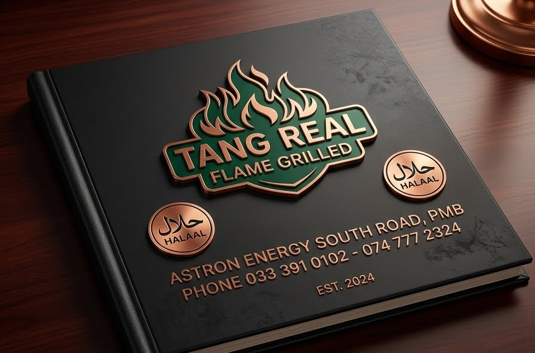

About Tang
The page develops the Part 1 text blocks into a clearer content hierarchy while keeping the original project purpose.
The business
Tang Real Flame Grilled is described in the Part 1 proposal as an established casual takeaway in Pietermaritzburg, KwaZulu-Natal, specialising in Indian cuisine.
The proposed website is intended to strengthen the digital presence, improve access to menu information and give customers a clearer path to pickup ordering.

Website focus
- Authentic food presentation
- Clear menu information
- Simple customer journeys
- Accessible contact and location details
- Responsive layouts for different screen sizes
Design direction
The supplied wireframes guided the page structures: a hero and CTA on Home, product cards on Menu, a six-item image grid on Gallery, and structured content blocks for About and Contact.